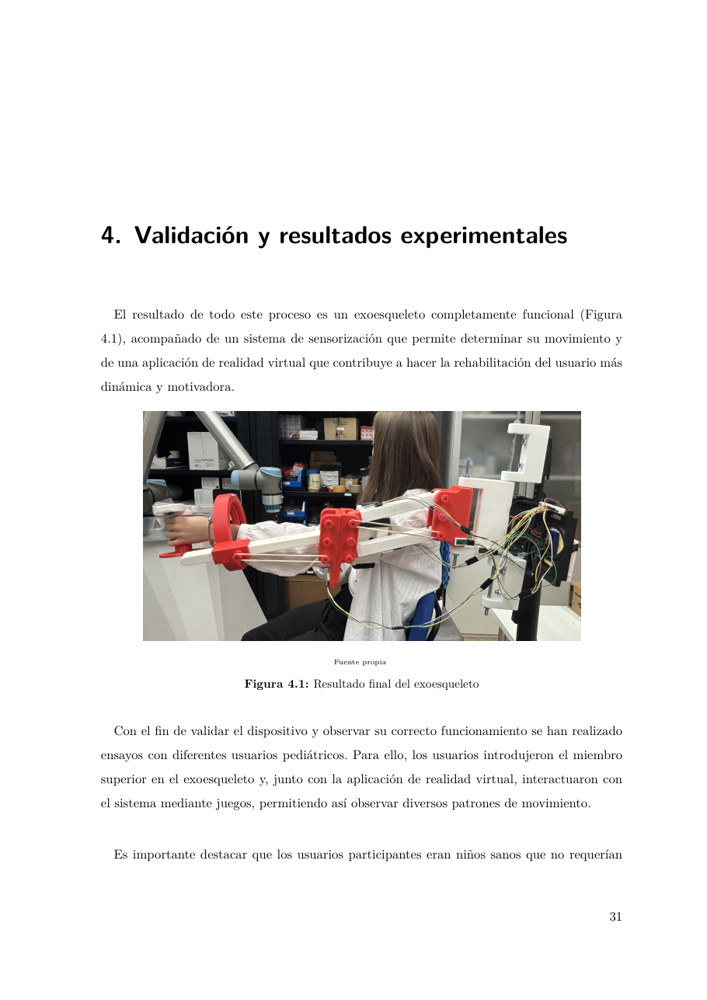
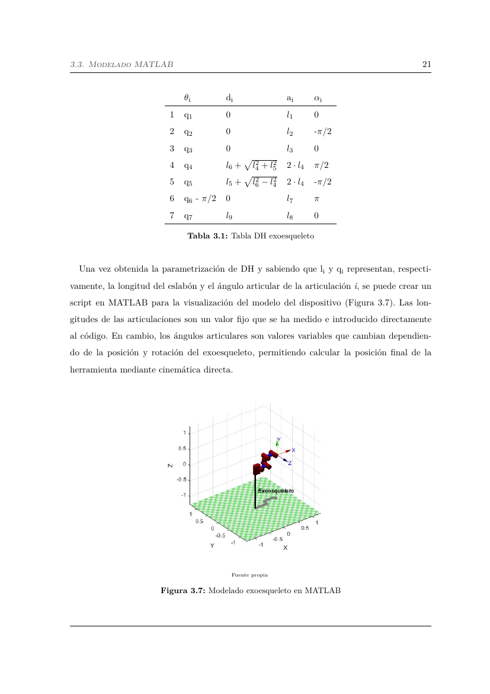
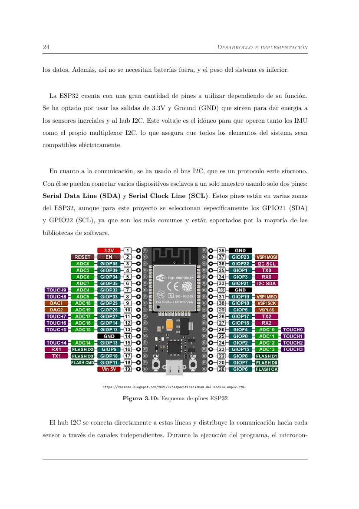

BACHELOR'S THESIS · UNIVERSITY OF ALICANTE · 2025
Pediatric Upper-Limb Exoskeleton
Development and construction of a pediatric upper-limb exoskeleton for rehabilitation, combining mechanical design, 3D printing, inertial sensing, kinematic modelling and a virtual-reality interaction layer.



System architecture
- 7 × IMU — Pololu AltIMU-10 v6
- ESP32 — sensor acquisition
- TCA9548A — I²C multiplexing
- MATLAB / Robotics Toolbox — modelling and kinematics
- PLA / 3D printing — physical construction
- Nintendo Switch controller — interaction input
- Unity / VR serious game — rehabilitation environment
What I worked on
The project covered the adaptation and printing of mechanical parts, assembly, sensor integration, movement acquisition and joint-angle calculation, followed by synchronization with a VR application. The prototype was functionally validated through testing.